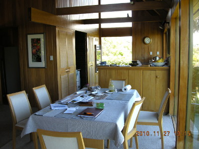
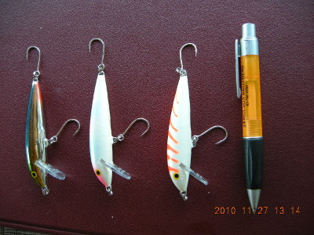
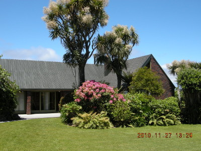

釣行日誌 ＮＺ編 「翡翠、黄金、そして銀塊」
鰐部さん帰国、僕はブリントさん宅へ
2010/11/27(SAT)
明けて２７日。ディーン君が迎えに来てくれて、今朝の朝食もコル・コテッジのオーナー夫妻、ポールさんとリンダさんの家でごちそうになった。その後、コテッジの部屋を片付け、荷物をパッキングして３人はブリントさんの家に向かった。ここで僕と鰐部さんはお別れとなり、彼は一足先に帰国するのだ。僕はこれからブリントさんの家に居候して、再び南島西海岸のシーランブラウントラウトを狙って、ブリントさんとの釣行に出かけることになっている。
ディーン君と鰐部さんは車に乗り、北東に30分ほど離れたグレイマウスの駅に向かうこととなった。鰐部さんは帰途は飛行機ではなく、サザンアルプスを陸路横断する「トランツ・アルパイン鉄道」に乗って、クライストチャーチまで向かうのだ。この路線は、世界でも有数の風光明媚な鉄道として知られており、とても人気が高いのである。ディーン君の家は、トランツ・アルパインの客車から見える牧場の中に建っているので、
「カツ、オレの家が見えたらその赤い靴下を脱いで列車の窓から振れよ。オレも手を振るから！」
と、得意の冗談を飛ばして車に乗り込んだ。
「カツ、お疲れ様！ 気を付けて帰ってね。」
日本に向けて出発する鰐部さんに声をかけると、ディーン君の車は走り出して行った。
さて、今日はブリントさんの家で、この４日間の釣りの疲れをゆっくり癒し、明日からの釣行に備えて鋭気を養うのだ。ホキティカの町を見下ろす小高い丘の上に建っている彼の家は、大きいガラス窓があってとても見晴らしが良い。晴れた日にははるかマウントクックも見えると言う。僕はお土産をザックから取り出してきて、トロレイ家の居心地の良いダイニングテーブルに座った。

はるばる持ってきたのはラパラのプラグ３個。フックはシングルに取り替えてある。それらを見せるとブリントさんは、
「おお！これは良い！ ただちょっとサイズが大きいなぁ....。これなら海のカウワイ向けだ。」
と言った。事前の話では、黒と金色のラパラがブラウントラウトには効くという話だったので、近所の釣具屋で買ったのだが、サイズが少々大きすぎたようだ。今度来る時にはちょうど良いサイズを買ってこようと思った。

朝のお茶を楽しみながら雑談していると、ブリントさんに、南島西海岸におけるブラウントラウトのフライフィッシングのコツを訊いてみたくなった。そこで、ミニ三脚にデジカメを固定し、動画モードでブリントさんの経験からにじみ出るティップスを話してもらって録画した。
その話の中では、
第１に、用心深いブラウンに対してソフトなプレゼンテーションを行うため、リーダー・ティペットの長さを十分にとること、14～18ft ぐらい。
第２に、ブラウンの視界が限定される背後から、慎重に、静かに音を立てずにアプローチすること。
ニンフの場合は、鱒が定位している水深まで正確に沈めて流すこと
ドライの場合は、鱒にフライを２回見切られたら、すぐに次のフライに交換すること。
攻める順序は、まず水面からドライで。次に水中のニンフを用い、それでもダメだったら小さなストリーマーパターンでアクションを付けて引っ張ること。
春先、河口近くで降海型ブラウンを狙う時には、彼らの常食である小魚：ホワイトベイトを模したストリーマーパターンを用いること。
などのティップスが語られた。とても貴重な話が聞けた。帰国したら YouTube にアップしようと思った。
そんなことをしつつ二人で談笑していると、玄関にコル・コテッジの御主人ポールさんがやって来て、僕が部屋に忘れた白いタオルハットを届けてくれた。とても親切な人だった。

この日の午後は、ブリントさんの家の回りを散歩したりして、のんびりと過ごし、夜はゲストルームの大きなベッドでゆっくりと休んだ。
釣行日誌ＮＺ編 目次へ
サイトマップ
ホームへ
お問い合わせ